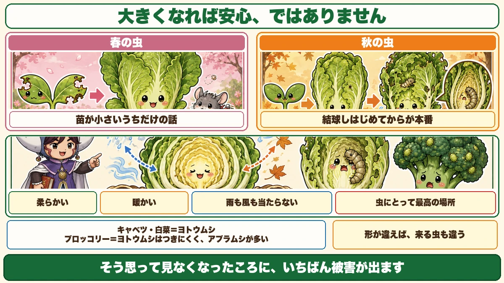
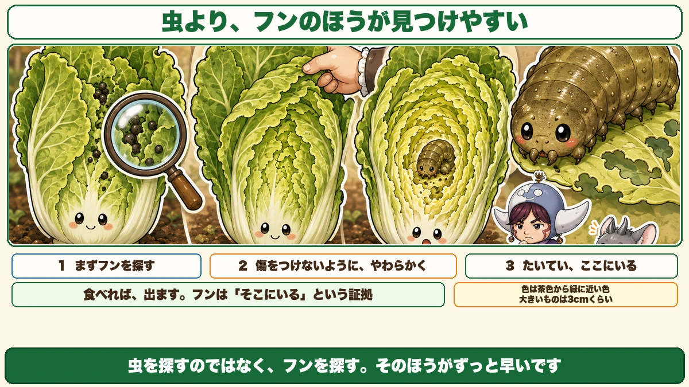
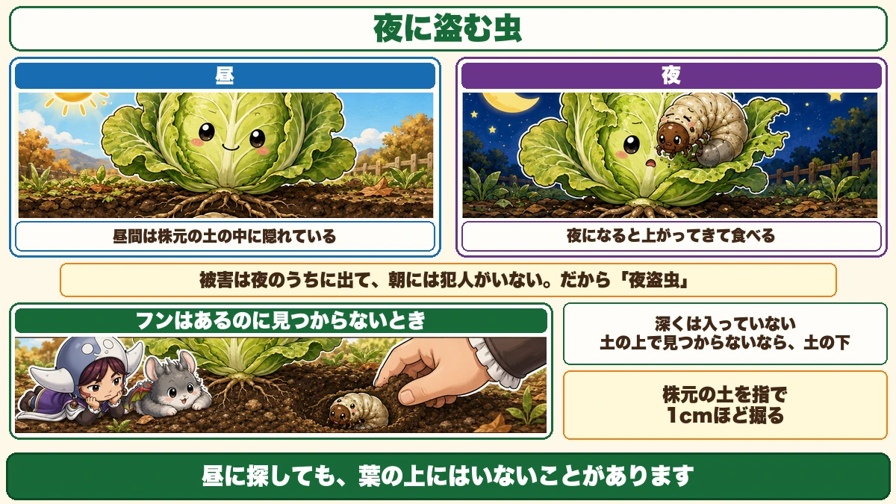
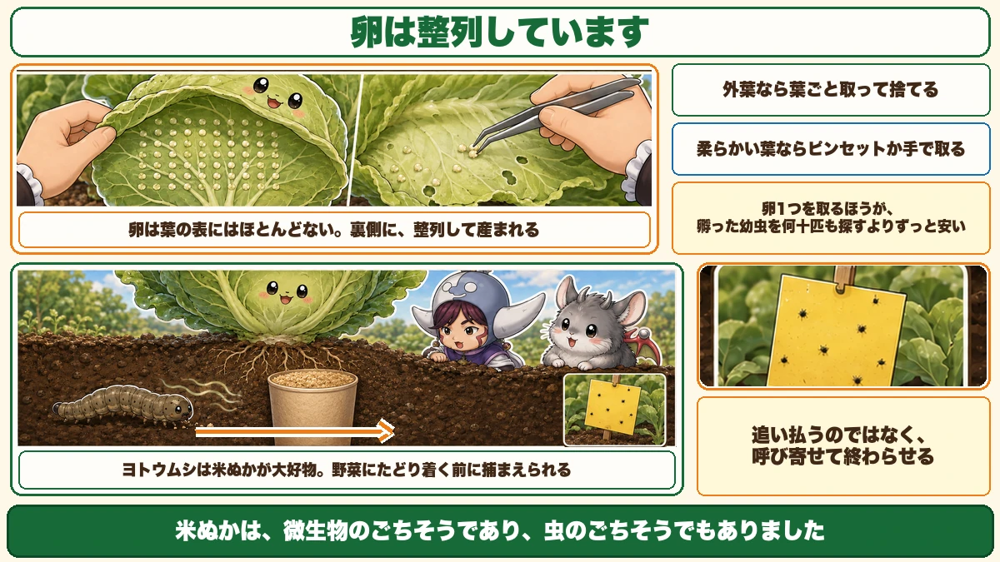

秋の畑の虫対策｜ヨトウムシ・アオムシ・アブラムシの見つけ方と薬を使わない手当て
どうも、8150（えいこう）です🌱 家庭菜園歴8年、理科の教員免許を持っていて、有機・無農薬で野菜を育てています。
この記事で分かること
- 秋の畑では、10月ごろ、気温が落ちついてくると、アブラムシがぐっと増えます。春から夏に見てきた虫のほとんどが、秋にも出てきます。
- 秋冬野菜の主な虫は、アブラムシ、ヨトウムシ、アオムシ、コナガ、シンクイムシ、ダイコンサルハムシなどです。
- 虫そのものより、ふんのほうが見つけやすいことがあります。ふんがあれば、近くに虫がいます。
- ヨトウムシは、昼は土の中や葉のすき間にかくれ、夜に出てきて葉を食べます。
- 防虫ネットは大切ですが、かけっぱなしで点検しないと、中で虫が増えていても気づけません。
- 11月を過ぎても、虫が一気にいなくなるとはかぎりません。暖かい年は、冬まで続くこともあります。
秋になって、白菜や大根、キャベツが順調に育ってきた。そう思っていたら、ある朝、葉がレースのように穴だらけになっていた。そんな経験、ありませんか。
秋は、夏の暑さがやわらいで、人間にとって過ごしやすい季節です。でもそれは、虫にとっても同じなんです。暑すぎず寒すぎない秋は、虫が元気に動き回る季節でもあります。
安心してください。秋の虫には、それぞれクセがあります。どこにいるのか、何を手がかりに探せばいいのかが分かれば、薬を使わなくても、被害をおさえることができます。この記事では、秋の虫の見つけ方と手当てを、順番に書いていきます。

早見：秋の虫対策の基本（ひと目で分かる目安）
秋に出る主な虫と、いる場所
- アブラムシ：葉の裏、新芽（成長点）、寒くなるとマルチの下や株元
- ヨトウムシ：昼は土の中や葉と葉のすき間、夜に葉の上
- アオムシ（モンシロチョウの幼虫）：葉の上や裏
- コナガ：葉の裏。アオムシより小さく細長い
- シンクイムシ：株のまん中（成長点）
- ダイコンサルハムシ：葉の上。土の中から出てくることも
- ネキリムシ：土の中。夜に株元をかじる
見つける手がかり
- 緑や黒っぽいふんが、マルチや下の葉の上に落ちていたら：ヨトウムシやアオムシ
- 黒いマルチの上に、白い粉のようなものが落ちていたら：アブラムシの脱皮した殻
- 株にアリが集まっていたら：アブラムシがいるかもしれない
- 葉の裏に、小さな粒がきれいに並んでいたら：卵
薬を使わない手当て
- 手で取る、ピンセットで取る
- 刷毛（はけ）で払い落とす
- 水で洗い流す
- 枯れた葉や混みあった葉を取り除く
- 米ぬかトラップでヨトウムシを集める
いちばん大事なこと
- 防虫ネットは、植えた直後からかけて、すそを土で押さえる
- ネットの中も、来るたびにのぞいて点検する
- 見る回数が多いほど、被害は小さくなる
秋の虫カレンダー（だいたいの目安）
- 9月：秋冬野菜の種まき・植えつけの時期。アオムシ、コナガ、シンクイムシ、ダイコンサルハムシなどが芽や若い苗をねらう。9月後半からヨトウムシが活発に
- 10月：気温が落ちつき、アブラムシがぐっと増える。ヨトウムシ、アオムシも引き続き多い。春から夏に見た虫のほとんどが出てくる時期
- 11月：大根や白菜がぐんぐん育つ時期。アブラムシが下の葉から増えていくことも。暖かい日はまだちょうちょや蛾が飛び、卵を産む
- 12月：寒くなると、虫の動きはぐっとにぶくなる。ただし、土の中やマルチの下、株のすき間で冬を越している
地域や、その年の気温によって大きく変わります。暖かい年は、冬になっても虫が残ることがあります。
作業の手順
ここからは、秋の虫対策の流れを、順番に書いていきます。
手順1：植えたらすぐに、防虫ネットをかける
秋冬野菜の虫対策の基本は、防虫ネットです。
- 種をまいたり苗を植えたりしたら、遅くともその直後にはかける
- ネットのすそは、土をかぶせて、すき間をなくす
- 穴のあいた古いネットは使わない
- 葉がネットにふれないくらいの高さにする（ふれていると、外から卵を産みつけられることがある）
ネットは、ちょうちょや蛾などの親が飛んできて、卵を産むのを防ぐためのものです。かけるのが遅れると、もう卵を産みつけられていて、ネットの中で幼虫が育ってしまいます。
手順2：ネットの中を、来るたびに点検する
防虫ネットをかけていれば安心、ではありません。
かけっぱなしで点検しないでいると、いつのまにか中にアブラムシが入りこんで、ネットの中でどんどん増えていた、ということがよくあります。ネットの中は、風や雨が当たりにくく、天敵も入ってこられないので、アブラムシにとってはむしろ住みやすい場所になることもあるんです。
畑に来たら、ネットを少し開けて、中の葉の裏や株元をのぞいてください。
ただし、開け閉めのときに葉を傷つけたり、すきに虫が入ったりすることもあります。白菜のように玉になる野菜は、開ける日を決めて、ていねいに開け閉めするのがおすすめです。
手順3：強い風のあとは、すそを見直す
台風や強い風のあとは、ネットのすそが外れていたり、すき間ができていたりすることがあります。風のあとは、必ず一周回って確かめてください。
手順4：葉の裏と、新芽を見る
アブラムシは、葉の表ではなく、裏にいます。また、いちばん上のやわらかい新芽（成長点）にも集まります。
- 葉を1枚ずつめくって、裏を見る
- 株のまん中の新芽をのぞく
- 株を軽くゆすったり、葉を指でたたいたりすると、裏にいたアブラムシがぽとっと落ちてくる。黒いマルチの上なら見つけやすい
秋のアブラムシは、白菜や大根などの葉物に多いと言われますが、ブロッコリーやキャベツ、なすや里芋などでも見られます。その年の気候によっても、どの野菜に多く出るかは変わるので、育てている野菜は全部見ておきましょう。

手順5：ふんを探す
虫そのものは、葉の色にまぎれて見つけにくいことがあります。でも、ふんは意外と目立ちます。
- ヨトウムシやアオムシの場合、緑色や黒っぽいふんが、マルチの上や下の葉の上に落ちている
- アオムシのふんは、緑色のころころした粒
ふんを見つけたら、その真上や近くに、必ず虫がいます。食べられた跡と、ふんの両方がある場所を、よく探してください。
白菜やキャベツのように、葉が重なって玉になる野菜では、ふんがあるのに虫が見えないことがあります。そんなときは、葉と葉のすき間、つまり芯のほうにもぐりこんでいることが多いです。葉を1枚ずつそっとめくって、奥のほうまで確かめてください。
手順6：ヨトウムシは、昼と夜で探し方を変える
ヨトウムシは、漢字で書くと「夜盗虫」。名前のとおり、夜に活動する虫です。夜のあいだに、こっそり葉を盗むように食べていく、というわけですね。昼間に見つからないのも当然です。
- 昼：土の中に潜っている。または、葉と葉のすき間にかくれている
- 夜：土から出てきて、株をよじ登り、葉を食べる
ですから、昼間に畑に来ても、なかなか姿が見つかりません。食べられた跡とふんはあるのに、虫がいない。そんなときは、ヨトウムシを疑ってください。
昼間に探すなら、株元の土を浅く掘ってみます。マルチを張っている場合は、マルチの穴のまわり、株元付近の土の浅いところにひそんでいることが多いです。丸まった幼虫が見つかったら、取り除きます。
夜の虫なので、朝の早い時間や、夕方に畑に来ると見つけやすい、という説明もあります。

手順7：卵を見つけて、ふ化する前に取る
ヨトウムシなどの蛾の卵は、葉の裏に、小さな粒がきれいに並んだかたまりとして産みつけられていることがあります。
- 葉の裏を見て、粒がびっしり並んでいたら、卵のかたまり
- 見つけたら、その葉ごと取り除く
卵からかえったばかりの幼虫は、最初は集団で葉の裏を食べて、葉が白く透けたようになります。そのあと、ばらばらに散って、株全体に広がっていきます。
卵のうちに見つけて取ってしまうのが、いちばん手間がかからない方法です。散らばってからでは、1匹ずつ探すことになってしまいます。
手順8：手で取る・刷毛で落とす
見つけた虫は、薬を使わずに取り除けます。
- ヨトウムシやアオムシ：手やピンセットで取る
- アブラムシが数匹：やわらかい刷毛で、軽く払い落とす
- アブラムシが新芽に集まっている：刷毛で新芽から払い落とし、そのあと水をかけて流す
刷毛を使うときは、やわらかい新しい葉を傷めないように、軽くなでるように払います。
手順9：水で洗い流す
アブラムシが多いときは、じょうろで水をかけたり、霧吹きで強めの水をかけたりして、物理的に洗い流す方法もあります。
洗い流したアブラムシが、また株に戻ってこないように、区画の外へ流すようにします。
手順10：枯れた葉を取り除く
株元の枯れた葉や、黄色くなった下の葉は、虫のかくれ家になります。取り除いておくと、風通しがよくなって、虫が住みにくくなります。
ただし、元気な葉まで全部取ってしまう必要はありません。枯れた葉、傷んだ葉、混みあった部分を整理するくらいで十分です。
手順11：米ぬかトラップを仕掛ける
ヨトウムシには、米ぬかを使ったトラップを仕掛ける方法があります。
- 紙コップなどに米ぬかを入れる
- 株の根元に穴を掘って、コップを埋めこむ
- 夜に出てきたヨトウムシが、米ぬかに集まってくる
- 雨が降ったら、米ぬかを取りかえる
米ぬかは、ヨトウムシにとってもごちそうです。ただ、トラップでどれくらい減るかははっきりした数字がないので、手で取るのと組み合わせて使ってください。

手順12：収穫した野菜は、水につけて洗う
収穫した白菜や大根、かぶ、小松菜などには、葉のすき間にアブラムシやアオムシがついていることがあります。
1つずつ流水で洗うのは手間がかかるので、桶に水を張って、野菜をしばらくつけておく方法があります。葉についていた虫が浮いてきたり、離れたりするので、効率よく落とせます。
手順13：土の中で冬を越す虫を探す
収穫が終わった場所や、空いた畝を耕すときは、土の中の虫も探してみましょう。
- マルチの下や、土の表面から10cmくらいの浅いところに、ヨトウムシの幼虫やさなぎがひそんでいることがある
- 大きさは2〜3cmくらい。茶色っぽいさなぎや、丸まった幼虫
- 見つけたら取り除く
冬のあいだに少しでも数を減らしておくと、春に出てくる虫を減らすことにつながります。
手順14：トンネルをかける前に、中の虫を取る
寒くなって、防寒のためにビニールトンネルをかけることがあります。トンネルの中は温かいので、野菜にはありがたいのですが、アブラムシにとっても住みやすい場所になります。
トンネルをかける前に、葉の裏や株元を見て、アブラムシなどの虫を取り除いておきましょう。かけたあとも、畑に来たときには数時間でもすそを上げて風を通し、帰るときに閉める、という管理をすると、中で虫が増えにくくなります。
そら豆など冬を越す野菜も、ネットやトンネルの中でアブラムシが増えることがあります。アブラムシが増えているなら、防寒よりも、まず虫を落とすことを優先してください。
手順15：天敵を追い払わない
畑には、虫を食べてくれる生き物もいます。
- テントウムシ（成虫も幼虫も、アブラムシを食べる）
- クモ
- カマキリ
- カエル、トカゲ
こうした生き物を見つけたら、追い払わずに、そっとしておいてください。薬を使わない畑では、こうした天敵が、虫の数をおさえる大切な味方になります。
5分でできる、見回りの順番
畑に来たら、次の順番で見て回ると、短い時間でも見落としが少なくなります。
- まず、遠くから畑全体を見る。白いちょうちょが飛んでいないか、しおれている株はないか
- ネットのすそと、破れを一周して確かめる
- 株元とマルチの上を見る。ふん、白い粉（アブラムシの抜け殻）、倒れた苗はないか
- 株のまん中（成長点）をのぞく。糸を張った跡や、黒いふんはないか
- 葉を何枚かめくって、裏を見る。アブラムシ、卵のかたまり、小さな幼虫はないか
全部の株の全部の葉を見る必要はありません。畝ごとに何株か選んで見るだけでも、虫が出始めたことにはすぐ気づけます。気になる株があったら、そこだけていねいに見ればいいんです。
虫ごとの見分け方
アオムシとコナガ
どちらもキャベツや白菜、大根など、アブラナ科の野菜の葉を食べる緑色の幼虫です。
- アオムシ：モンシロチョウの幼虫。ずんぐりした緑色のいも虫。葉に大きな穴をあける
- コナガ：アオムシより小さく、細長い。さわるとぴくぴくと激しく動く。葉の裏から食べて、表の薄い皮だけを残すので、葉に白い膜のような跡が残る
モンシロチョウは、ほんの1秒葉に止まっただけでも卵を産んでいく、と言われます。白いちょうちょが畑を飛んでいたら、葉の裏を見てみてください。
ヨトウムシ
ずんぐりした、緑色から茶色っぽい幼虫です。大きくなると、一晩で葉をごっそり食べてしまうこともあります。小さいうちは、葉の裏から食べて、葉が白く透けたようになります。この白く透けた葉を見つけたら、近くに小さな幼虫の集団がいるので、葉ごと取り除いてください。
昼は土の中、夜は葉の上。ふんはあるのに虫が見つからない、というときの第一候補です。
アブラムシ
小さな虫が、葉の裏や新芽にびっしり集まります。いろいろな種類がいて、色も緑、黒、茶色などさまざまです。
アブラムシがいると、葉の表がべたべたしたり、そこにすすのような黒いカビが生えたりすることがあります。これは、アブラムシの出す甘い排せつ物が原因です。
アリが株にたくさん来ていたら、アブラムシがいる可能性が高いです。アリは、この甘い排せつ物を目当てにやってきます。ただし、秋はアブラムシの排せつ物が少なく、アリがいなくてもアブラムシがいることがあるので、アリがいないから安心、とは言えません。
ダイコンサルハムシ
大根やかぶ、白菜などにつく、小さな黒っぽい甲虫です。葉に穴をあけて食べます。
この虫は、外から飛んでくるというより、土の中から出てくることがあります。そのため、目の細かい防虫ネットをかけていても、中に出てくることがあるので注意が必要です。
シンクイムシ
株のまん中、いちばん新しい芽（成長点）にもぐりこんで食べる虫です。成長点を食べられると、株がそれ以上大きくならず、白菜やキャベツは玉ができなくなります。
株のまん中に、糸を張ったような跡や、黒いふんがあったら、シンクイムシを疑ってください。
ネキリムシ
土の中にいて、夜になると出てきて、植えたばかりの苗の株元をかじって倒してしまう虫です。朝見たら、苗が根元から倒れていた、というときはネキリムシの可能性があります。株元の土を浅く掘ると、丸まった幼虫が見つかることがあります。
野菜ごとの注意点
- 白菜：玉が巻き始めると、ヨトウムシやアオムシが葉のすき間にもぐりこむ。ふんを見たら芯のほうまで探す
- 大根：葉にアブラムシ、ダイコンサルハムシ、アオムシ。下の葉から増えていくことがある
- キャベツ：アオムシとコナガが多い。玉の外側の葉の裏を見る
- ブロッコリー：年によってアブラムシが多く出る。つぼみのすき間にも入りこむので、収穫したら水につけて洗う
- 小松菜・かぶ・水菜：アオムシ、コナガ、ダイコンサルハムシ。葉が小さいうちに食べられると育たなくなるので、種まき直後からネットを
- ほうれん草：アブラナ科ではないので虫は比較的少ないが、ヨトウムシやアブラムシがつくことはある
- ねぎ：寒くなると、葉と葉のすき間にアブラムシがひそんで冬を越すことがある
- そら豆：冬のあいだ、新芽にアブラムシがつくことがある。暖かい冬は特に注意
失敗の見分け方
ネットをかけているのに、中で虫が増えた
- ネットをかけるのが遅れて、もう卵を産みつけられていた
- すそにすき間があった、ネットが破れていた
- 葉がネットにふれていて、外から卵を産まれた
- 土の中から虫が出てきた（ダイコンサルハムシ、ヨトウムシなど）
ネットをかけていても、点検は欠かせません。
毎日見ているのに、被害が止まらない
昼間だけ見ていると、ヨトウムシやネキリムシのような夜に動く虫を見逃します。朝早くや夕方に来てみる、株元の土を掘ってみる、などで探し方を変えてみてください。
株のまん中が食べられて、大きくならない
シンクイムシの可能性があります。成長点が食べられた株は、回復がむずかしいこともあります。まだ植え直しの時期に間に合うなら、新しい苗に植えかえるのも一つの手です。
葉がべたべたして、黒くなってきた
アブラムシの排せつ物と、それに生えたカビです。葉の裏を見て、アブラムシを落としてください。
白菜の芯のほうから、虫が出てきた
ヨトウムシやアオムシが、葉のすき間にもぐりこんでいたのかもしれません。ふんを見つけたら、葉を1枚ずつめくって、奥まで確かめる習慣をつけましょう。
説明が分かれていること
防虫ネットは、こまめに開けるか、開け閉めを最小限にするか
- ネットの中も換気が必要。来るたびに開けて、中を点検する、という説明
- 開け閉めのたびに、虫が入ったり、葉を傷つけたり、玉の中に土が入ったりする。開ける日を決めて、最小限にする、という説明
育てている野菜や、ネットの中の状態によって変わります。どちらにしても「点検はする」のは共通です。葉物ならこまめに、白菜のように玉になる野菜なら日を決めて、と使い分けるといいと思います。
秋のアブラムシは、どの野菜に多いか
- ブロッコリーにアブラムシが多い、という説明
- 寒くなる時期は、白菜や大根ほどキャベツやブロッコリーでは見つからない、という説明
- 本来ブロッコリーでは多くないが、その年の気候によって出ている、という説明
年や時期によって変わります。どの野菜も、葉の裏を見ておくのが確実です。
11月を過ぎたら、虫は減るか
- 11月後半になると、アブラムシの被害はだいぶ減ってくる、という説明
- 夏から秋に高温が続いた年は、むしろ11月に気温が下がってからアブラムシが増えた、という説明
- 12月ごろには、ヨトウムシの活動はぐっと少なくなる。ただし、いなくなったのではなく、土の中でさなぎになって冬を越している、という説明
- 暖かい冬は、1月にアブラムシが大発生した例もある、という説明
暦だけで「もう大丈夫」とは言えません。その年の気温を見て、見回りを続けてください。
油石けん水などの手作りの液
油石けん水、酢を薄めた液、コーヒーを使った液など、いろいろな手作りの液が紹介されています。ただ、配合や効き目ははっきりしないものも多く、葉にかけたまま放置すると葉を傷めることもあります。使う場合は、かけたあと時間をおいて水で洗い流す、という注意も合わせて紹介されています。
まずは、手で取る、刷毛で落とす、水で流す、という方法から始めるのがおすすめです。
よくある質問
Q. 秋は、毎日畑に行かないとだめですか？
A. 毎日でなくても大丈夫です。ただ、見る回数が多いほど、虫を小さいうちに見つけられます。虫は、数日のうちにあっという間に増えたり、大きくなったりします。週に1回より週に2回、2回より3回と、少しでも回数を増やせると、それだけ被害を小さくおさえられます。毎日が無理なら、来たときに葉の裏とふんと株元を必ず見る、と決めておくと、短い時間でも効果があります。
Q. 虫を手で触るのが苦手です
A. ピンセットや割りばしを使えば、直接触らずに取れます。取った虫は、水を入れた容器に落とすと、逃げられずにすみますよ。アブラムシなら、刷毛で払うか、水で流す方法がおすすめです。手袋をしておくのもいいですね。
Q. 食べられた葉は、取ったほうがいいですか？
A. 少し穴があいているくらいなら、そのままでも大丈夫です。葉が残っていれば、光を受けて株を育ててくれます。ただ、ぼろぼろになった葉や、卵がついている葉、アブラムシがびっしりついている葉は、取り除いたほうがいいです。
Q. 天敵の虫は、どうすればいいですか？
A. テントウムシ、クモ、カマキリ、カエルなどは、アブラムシやいも虫を食べてくれる味方です。見つけても追い払わずに、そっとしておいてください。ただし、テントウムシの中には、野菜の葉を食べてしまうテントウムシダマシというなかまもいます。背中のもようと、つやのなさで見分けられます。
Q. 穴だらけになった株は、もうだめですか？
A. 株のまん中（成長点）が無事なら、回復することが多いです。新しい葉が元気に出てくれば、大丈夫です。成長点が食べられてしまった場合は、回復がむずかしいことがあるので、時期に余裕があれば植え直しを考えます。
Q. 冬になったら、ネットは外していいですか？
A. 寒くなって虫が減ってきたら、外すこともできます。ただ、暖かい日にはまだちょうちょや蛾が飛んでいることがあり、11月でも卵を産みつけられることがあります。外すタイミングは、虫のようすを見て決めてください。防寒のためにトンネルをかける場合は、その前に中の虫を取り除いておきましょう。
Q. 朝見たら、植えたばかりの苗が根元から倒れていました
A. ネキリムシの可能性が高いです。夜のあいだに株元をかじられて、苗が倒れてしまいます。倒れた苗のまわりの土を、指で浅く掘ってみてください。丸まった幼虫が見つかることがあります。1匹いると、近くの苗も続けて被害にあうことがあるので、まわりの株元も確かめましょう。植えかえる苗があれば、すぐに植え直してください。
Q. ベランダのプランターでも、秋の虫は出ますか？
A. 出ます。ちょうちょや蛾は、ベランダにも飛んできて卵を産みます。プランター用の小さな防虫ネットをかけておくと安心です。プランターは数が少ないぶん、毎日葉の裏を見るのも楽なので、見つけたらすぐに取ることができます。
Q. 虫よけに、ほかの野菜を一緒に植えるのは効きますか？
A. アブラナ科の野菜のあいだにレタスなど違うなかまの野菜を植えると、においで虫が寄りにくくなる、という考え方があります。キャベツの近くにレタスを植える組み合わせは、よく紹介されます。ただ、これで虫がまったく来なくなるわけではありません。防虫ネットや見回りと組み合わせる、補助的な工夫として考えてください。
Q. 虫に食べられた野菜は、食べても大丈夫ですか？
A. 虫食いの穴があるだけなら、その部分を取り除いて、よく洗えば食べられます。収穫した野菜は、桶に水を張ってしばらくつけておくと、葉のすき間にいた虫が出てきやすくなります。ふんがついていた部分や、傷んで黒くなった部分は、取り除いてから使ってください。
Q. 防虫ネットの目は、細かいほうがいいですか？
A. 目が細かいほど、小さな虫まで防げます。アブラムシのような小さな虫も防ぎたいなら、目の細かいものを選びます。ただ、目が細かいほど風通しが悪くなり、中が蒸れやすくなります。秋は暑さが落ちついてくるので、細かめのネットも使いやすい季節です。どんなネットでも、すそのすき間が一番の弱点なので、そこはしっかりふさいでください。
Q. 収穫が終わった株は、どうすればいいですか？
A. 収穫が終わった株や葉にアブラムシがついていたら、畑に残さずに片づけましょう。アブラムシや卵が、そのまま冬を越して、春にまた増えるもとになります。使い終わったマルチも、はがして片づけておくと、その下で冬を越す虫を減らせます。
学ぶ🔬 なぜ秋は、虫が増えるのか
ここからは、秋の虫のしくみについて、少しだけ深く書いておきます。読み飛ばしても大丈夫です。
アブラムシは、暑すぎるのも寒すぎるのも苦手
アブラムシは、寒い冬が苦手ですが、実は暑すぎる夏も苦手です。だから、真夏にはあまり見かけなくなり、気温が落ちついて人間にとっても過ごしやすくなる秋に、また一気に増えてきます。
10月ごろ、白菜や大根が育ってくるころと、アブラムシが増えるころが、ちょうど重なるんですね。
春と秋で、虫と野菜の関係が逆になる
春に植えた野菜は、だんだん暖かくなる中で大きく育っていきます。虫も増えていきますが、株が大きくなれば、多少食べられても負けないくらいの体力がつきます。
秋は、その逆です。植えたあと、だんだん寒くなって、株の育つスピードは落ちていきます。一方で、10月ごろは虫がいちばん元気な時期。株がこれから大きくなろうというときに虫が増え、しかも寒さで株の回復力は落ちていきます。
だから、秋は「大きくなれば安心」とはいかず、最後まで見回りが必要なんです。
なぜネットの中で、アブラムシが増えるのか
防虫ネットやビニールトンネルの中は、外に比べて温かく、雨や風も当たりにくくなります。テントウムシなどの天敵も入ってこられません。
アブラムシにとっては、温かくて、雨にも打たれず、天敵もいない、とても快適な場所なんです。一度入りこんだアブラムシは、ネットの中でどんどん数を増やしていきます。ネットの中こそ、こまめな点検が必要な理由です。
なぜ虫は、寒くなっても消えないのか
寒くなると、虫の動きはにぶくなり、姿も見えにくくなります。でも、それは死んでしまったわけではありません。
アブラムシは、マルチの下や土の中の温かい場所、ねぎのすき間などで、じっと冬を越します。ヨトウムシは、土の中でさなぎになって冬を越します。そして、春に暖かくなると、また一気に動き出します。
冬のあいだに、収穫が終わった株やマルチを片づけたり、土を耕して中にひそむ幼虫やさなぎを探したりしておくと、春の虫を減らすことにつながります。
なぜ、ふんを探すと見つけやすいのか
アオムシやヨトウムシは、葉と同じような緑色や茶色をしていて、葉の上や土の中にいると、なかなか見分けがつきません。これは、鳥などに見つからないための工夫です。
でも、ふんは隠せません。たくさん葉を食べる虫ほど、たくさんのふんを落とします。そしてふんは、マルチの上や下の葉の上など、色の違う場所に落ちるので目立つんです。
ふんが新しいほど、虫はまだ近くにいます。乾いて古いふんしかなければ、もう移動しているかもしれません。ふんの新しさも、虫を探す手がかりになります。
なぜ卵は、かたまりで産みつけられるのか
ヨトウムシなどの蛾は、葉の裏に、たくさんの卵をまとめて産みつけます。葉の裏なら、雨や強い日差しから卵を守れますし、鳥などにも見つかりにくくなります。
かえったばかりの小さな幼虫は、最初はその葉に集まって食べ、大きくなるにつれて散らばっていきます。かたまりで産むのは、生まれた幼虫がすぐにえさにありつけるようにするためだと考えられています。
裏を返せば、卵のかたまりや、かえったばかりの幼虫の集団を見つけられれば、葉を1枚取るだけで、たくさんの虫を一度に減らせるということです。
なぜ水で流すだけで、アブラムシが減るのか
アブラムシは、細い口を葉に刺して汁を吸いながら、じっと同じ場所にとどまっています。体はとても小さく、やわらかいので、水の勢いで簡単に葉から離れてしまいます。
一度葉から落ちたアブラムシは、自分で元の場所に戻るのが苦手です。地面に落ちたまま弱ったり、ほかの虫に食べられたりします。だから、薬を使わなくても、水で洗い流すだけで数をかなり減らせるんです。
ただ、全部を一度に落としきるのはむずかしいので、何日かおきにくり返すのがコツです。洗い流したあとは、数日後にもう一度葉の裏を見て、残っていないか確かめてください。
なぜアオムシは、アブラナ科ばかり食べるのか
アブラナ科の野菜は、からし油のもとになる成分を持っています。大根やわさびの辛み、キャベツや白菜の独特の香りのもとです。この成分は、多くの虫にとっては苦手なもので、植物が自分の身を守るための武器になっています。
ところが、モンシロチョウの幼虫であるアオムシやコナガは、この成分に負けない体を持っています。それどころか、モンシロチョウの親は、この成分のにおいを手がかりにして、卵を産む場所を探すと言われます。
ほかの虫が食べられない葉を、自分たちだけが食べられる。アオムシやコナガがアブラナ科の野菜に集中するのは、このためです。秋冬野菜にアブラナ科が多いことが、秋の虫対策を大変にしている理由の1つなんですね。
なぜアリがいると、アブラムシがいるのか
アブラムシは、植物の汁を吸って、甘い排せつ物を出します。アリは、この甘い排せつ物が大好物です。そのため、アリはアブラムシのまわりに集まり、ときにはアブラムシを守るようなこともします。
アリが株を行ったり来たりしていたら、その先にアブラムシがいる可能性が高い、というわけです。ただ、秋はアブラムシの出す排せつ物の量が少ないので、アリが来ないこともあります。アリは目安の1つ、と考えてください。
まとめ
ここまで読んでくださって、ありがとうございます！
秋の虫対策のポイントを、もう一度まとめておきます。
- 秋は、気温が落ちつく10月ごろからアブラムシが増える。春から夏の虫も、ほとんどが秋に出てくる
- 防虫ネットは植えた直後に。すそは土で押さえる。破れたネットは使わない
- ネットの中も、来るたびに点検する。かけっぱなしにしない
- アブラムシは葉の裏と新芽。株をゆすると落ちてくる
- ふんを見つけたら、近くに虫がいる。白菜は芯のほうまで
- ヨトウムシは昼は土の中、夜に葉の上。株元を浅く掘ってみる
- 葉の裏の卵は、ふ化する前に葉ごと取る
- 手で取る、刷毛で落とす、水で流す、枯れ葉を取る、米ぬかトラップ
- 11月を過ぎても油断しない。収穫後の株やマルチも片づける
秋の虫対策は、結局のところ「見る回数」がすべてです。特別な道具や薬がなくても、葉の裏をめくる、ふんを探す、株元を見る。この3つを続けるだけで、被害はぐっと減らせます。
虫が見つかっても、あわてなくて大丈夫です。少ないうちに見つけて取れば、それで十分に間に合います。秋の畑の虫と上手につきあいながら、冬のおいしい野菜を育てていきましょう。
まずは今度畑に行ったとき、いちばん大事に育てている野菜の葉を、3枚だけめくってみてください🐛
防虫ネット（1mm目）
秋は結球しはじめてからが本番です。植えた直後からかけておいてください。


アーチ支柱
ネットを浮かせる骨です。葉に触れていると、その上から卵を産まれます。

マルチ押さえピン
裾が浮いていると、そこから入られます。数は多めに用意してください。

米ぬか
株元に少しまいて、翌朝そこに集まったヨトウムシを捕まえる方法があります。
![[商品価格に関しましては、リンクが作成された時点と現時点で情報が変更されている場合がございます。]](https://hbb.afl.rakuten.co.jp/hgb/565b770c.0e767ab7.565b770f.2286fabc/?me_id=1245791&item_id=10001139&pc=https%3A%2F%2Fthumbnail.image.rakuten.co.jp%2F%400_mall%2Figamai-tominaga%2Fcabinet%2Fkome%2Fimgrc0133415879.jpg%3F_ex%3D240x240&s=240x240&t=picttext "[商品価格に関しましては、リンクが作成された時点と現時点で情報が変更されている場合がございます。]")
あわせて読みたい